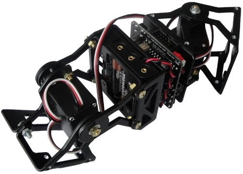
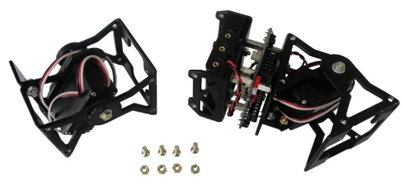

Ya están publicadas las instrucciones de montaje de Unimod 2D de tipo B1. La configuración Unimod 2D es el bloque mínimo para construir robots del grupo cabeceo-viraje. Está formado por dos módulos que oscilan en planos diferentes: uno vertical y otro horizontal.

El montaje es muy sencillo. Se parte de un módulo MY1 y un Unimod B1 ya montados. Se unen mediante tornillos y se conecta el servo.